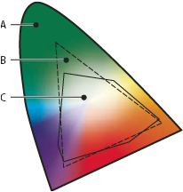

Color spaces and gamuts
A color space is a range of colors in the visible spectrum. A color space can also be a variant of a color model. Adobe RGB, Apple RGB, and sRGB are examples of different color spaces based on the same color model.

- A.
- Visual gamut
- B.
- RGB color space
- C.
- CMYK color space
The range of color encompassed by a color space is called a gamut. The different devices (computer monitor, scanner, desktop printer, printing press, digital camera) throughout your workflow operate within different color spaces and each with different gamuts. Some colors within the gamut of your computer monitor are not within the gamut of your inkjet printer, and vice versa. When a color cannot be produced on a device, it’s considered to be outside the color space of that particular device. In other words, the color is out of gamut.